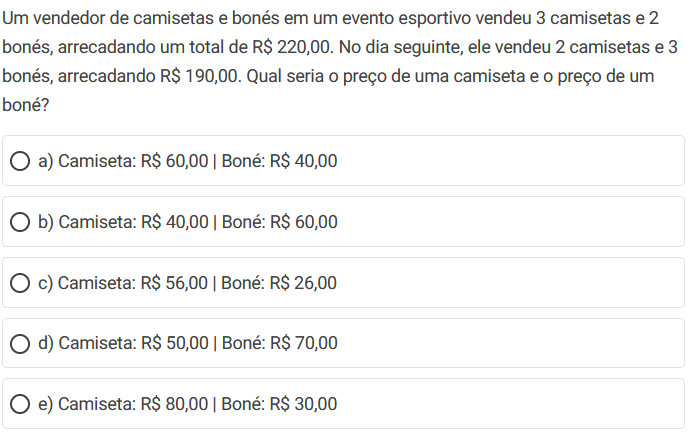
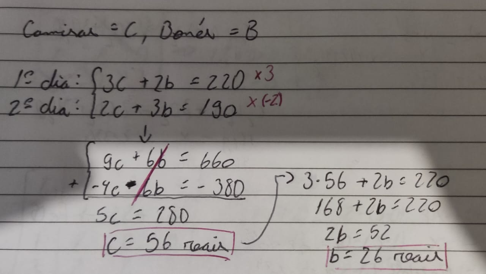
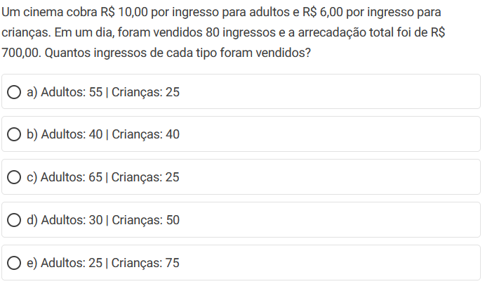
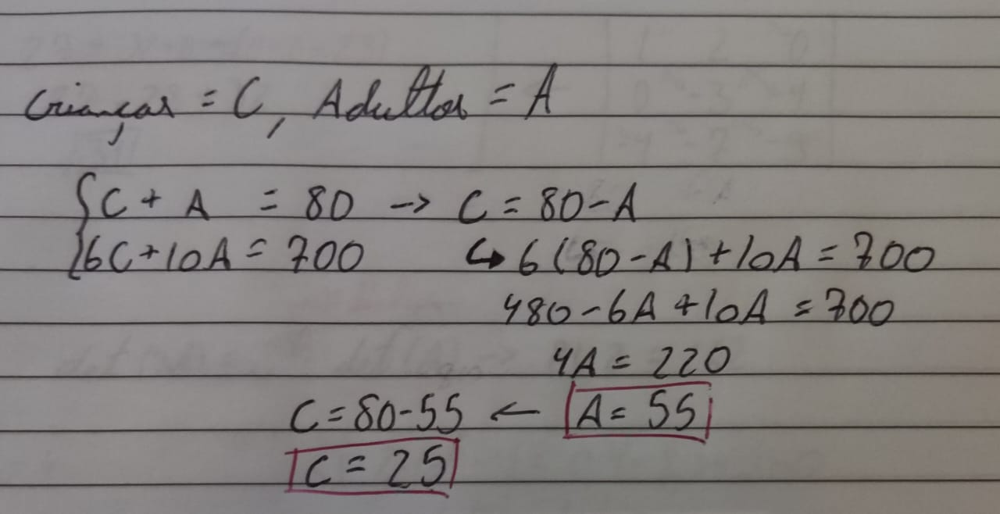

O que é uma equação linear?
Equações lineares são equações matemáticas que possuem 1 ou mais incógnitas, todas elas com expoente igual a 1. Por exemplo:
Equações com 2 incógnitas resultam em uma função afim e equações com 3 incógnitas resultam em gráficos 3D.
O que são sistemas lineares?
Sistemas lineares são a junção de 2 ou mais equações lineares com variáveis de mesmo valor.
Temos 3 tipos de sistemas lineares:
Determinado: apresenta apenas um valor de interseção das retas.
Indeterminado: as retas de cruzam em todos os pontos (estão sobrepostas).
Impossível: as retas não se cruzam.
Como resolver sistemas de equações?
Podemos resolvê-los por 2 métodos principais: substituição ou adição
Método da substituição
O método da substituição é pegar uma das equações e isolar uma das incógnitas. Por exemplo:
Método da Adição
Consiste em igualar o coeficiente de uma das incógnitas para poder cancelá-la com a outra equação. Normalmente multiplicamos a equação de cima ou de baixo por um numero que iguale as incógnitas e depois fazemos uma soma das duas equações. Por exemplo:
SPD, SPI ou SI?
Os dois exemplos acima são de sistemas com soluções SPD (determinadas), mas podemos também ter sistemas SPI (indeterminados) e SI (Impossíveis). Podemos determinar de 2 formas o tipo de sistema.
Utilizando o determinante de uma matriz: colocar os coeficientes da equação em uma matriz e calcular seu determinante, se for igual a 0 pode ser SPI ou SI e se for diferente de 0 é SPD.
Realizando um dos métodos de resolução (Adição ou substituição): Se ao fizermos a conta acharmos 0=0 o sistema é SPI, se acharmos numeros diferentes se igualando (como 0 = -11) o sistema é SI, caso o sistema for SPD não teremos dificuldades em resolvê-lo.
Questões
Questão 01 -
Tirando os dados do enunciados temos:
Questão 02
Resolvendo pelo método da substituição temos:
Referência: todamateria.com
>>Proximo Conteúdo
>>Página de Conteúdos